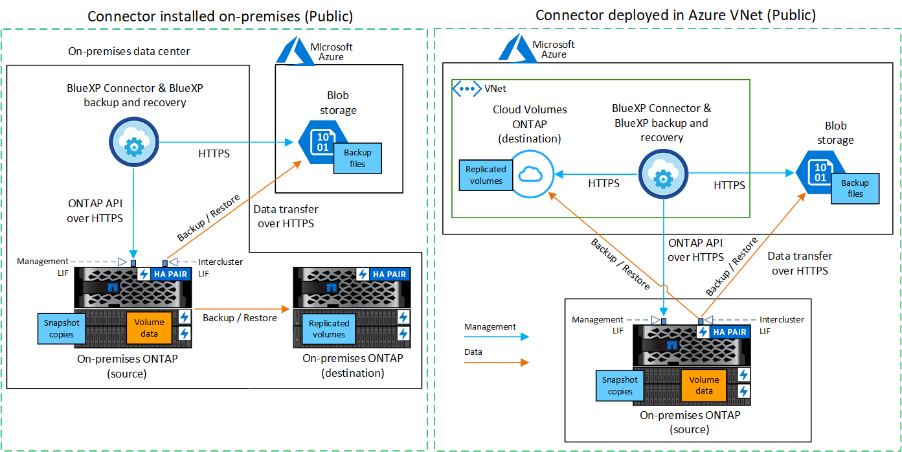
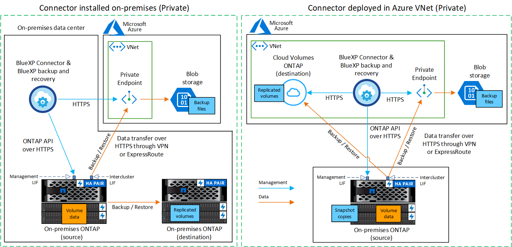

릴리스 정보
릴리스 정보
온프레미스 ONTAP 데이터를 Azure Blob 저장소에 백업
 변경 제안
변경 제안
몇 가지 단계를 완료하여 사내 ONTAP 시스템에서 보조 스토리지 시스템 및 Azure Blob 저장소로 볼륨 데이터 백업을 시작하십시오.

|
"사내 ONTAP 시스템"에는 FAS, AFF 및 ONTAP Select 시스템이 포함됩니다. |
빠른 시작
다음 단계를 수행하여 빠르게 시작하십시오. 각 단계에 대한 자세한 내용은 이 항목의 다음 섹션을 참조하십시오.
 사용할 연결 방법을 식별합니다
사용할 연결 방법을 식별합니다공용 인터넷을 통해 온프레미스 ONTAP 클러스터를 Azure에 직접 연결할지, VPN 또는 Azure ExpressRoute를 사용할지, 그리고 프라이빗 VPC 엔드포인트 인터페이스를 통해 트래픽을 Azure로 라우팅할지 여부를 선택합니다.
 BlueXP 커넥터를 준비합니다
BlueXP 커넥터를 준비합니다Azure VNET 또는 구내에 이미 Connector가 배포되어 있는 경우 모두 설정됩니다. 그렇지 않은 경우 ONTAP 데이터를 Azure Blob 저장소에 백업하려면 BlueXP 커넥터를 만들어야 합니다. 또한 Azure에 연결할 수 있도록 커넥터의 네트워크 설정을 사용자 지정해야 합니다.
 라이센스 요구 사항을 확인합니다
라이센스 요구 사항을 확인합니다Azure 및 BlueXP의 라이센스 요구 사항을 모두 확인해야 합니다.
을 참조하십시오 라이센스 요구 사항을 확인합니다.
 ONTAP 클러스터를 준비합니다
ONTAP 클러스터를 준비합니다BlueXP에서 ONTAP 클러스터를 검색하고, 클러스터가 최소 요구 사항을 충족하는지 확인하고, 클러스터가 Azure에 연결될 수 있도록 네트워크 설정을 사용자 지정합니다.
 Azure Blob을 백업 타겟으로 준비합니다
Azure Blob을 백업 타겟으로 준비합니다Azure 버킷을 생성하고 관리하기 위한 Connector의 권한을 설정합니다. 또한, 온프레미스 ONTAP 클러스터에 대한 사용 권한을 설정해야 Azure 버킷에 데이터를 읽고 쓸 수 있습니다.
선택적으로 기본 Azure 암호화 키를 사용하는 대신 데이터 암호화에 대해 사용자 지정 관리 키를 설정할 수 있습니다. Azure 환경에서 ONTAP 백업을 받을 수 있도록 준비하는 방법에 대해 알아보십시오.
 ONTAP 볼륨에서 백업을 활성화합니다
ONTAP 볼륨에서 백업을 활성화합니다작업 환경을 선택하고 오른쪽 패널의 백업 및 복구 서비스 옆에 있는 * Enable > Backup Volumes * 를 클릭합니다. 그런 다음 설정 마법사의 지시에 따라 사용할 복제 및 백업 정책과 백업할 볼륨을 선택합니다.
연결 방법을 식별합니다
사내 ONTAP 시스템에서 Azure Blob으로 백업을 구성할 때 사용할 두 가지 연결 방법 중 하나를 선택합니다.
-
* 공용 연결 * - 공용 Azure 끝점을 사용하여 ONTAP 시스템을 Azure Blob 저장소에 직접 연결합니다.
-
* 비공개 연결 * - VPN 또는 ExpressRoute를 사용하여 전용 IP 주소를 사용하는 VNET 전용 엔드포인트를 통해 트래픽을 라우팅합니다.
선택적으로 공용 또는 개인 연결을 사용하여 복제된 볼륨에 대해 보조 ONTAP 시스템에 연결할 수 있습니다.
다음 다이어그램에서는 * public connection * 메서드와 구성 요소 간에 준비해야 하는 연결을 보여 줍니다. 사내에 설치한 Connector 또는 Azure VNET에 배포한 Connector를 사용할 수 있습니다.

다음 다이어그램에서는 * private connection * 메서드와 구성 요소 간에 준비해야 하는 연결을 보여 줍니다. 사내에 설치한 Connector 또는 Azure VNET에 배포한 Connector를 사용할 수 있습니다.

BlueXP 커넥터를 준비합니다
BlueXP 커넥터는 BlueXP 기능을 위한 주요 소프트웨어입니다. ONTAP 데이터를 백업하고 복원하려면 커넥터가 필요합니다.
커넥터를 작성하거나 전환합니다
Azure VNET 또는 구내에 이미 Connector가 배포되어 있는 경우 모두 설정됩니다.
그렇지 않은 경우 해당 위치 중 하나에 Connector를 생성하여 ONTAP 데이터를 Azure Blob 저장소에 백업해야 합니다. 다른 클라우드 공급자에 배포된 Connector는 사용할 수 없습니다.
-
"Azure Government 지역에 Connector를 설치합니다"
BlueXP 백업 및 복구는 Azure Government 지역에서 Connector가 온프레미스에 설치된 것이 아니라 클라우드에 배포되었을 때 지원됩니다. 또한 Azure Marketplace에서 Connector를 배포해야 합니다. BlueXP SaaS 웹 사이트에서 정부 지역에 Connector를 배포할 수 없습니다.
커넥터를 위한 네트워킹을 준비합니다
커넥터에 필요한 네트워크 연결이 있는지 확인합니다.
-
커넥터가 설치된 네트워크에서 다음 연결을 사용할 수 있는지 확인합니다.
-
포트 443을 통해 BlueXP 백업 및 복구 서비스 및 Blob 개체 스토리지에 HTTPS로 연결합니다 ("끝점 목록을 참조하십시오")
-
포트 443을 통해 ONTAP 클러스터 관리 LIF에 HTTPS로 연결합니다
-
BlueXP 백업 및 복구 검색 및 복원 기능이 작동하려면 Connector와 Azure Synapse SQL 서비스 간의 통신을 위해 포트 1433이 열려 있어야 합니다.
-
Azure 및 Azure Government 배포에는 추가 인바운드 보안 그룹 규칙이 필요합니다. 을 참조하십시오 "Azure의 커넥터 규칙" 를 참조하십시오.
-
-
Azure 스토리지에 VNET 프라이빗 엔드포인트를 설정합니다. 이 기능은 ONTAP 클러스터에서 VNET로 연결되는 ExpressRoute 또는 VPN 연결이 있고, 가상 프라이빗 네트워크(* 전용* 연결)에 유지하기 위해 Connector와 Blob 스토리지 간의 통신을 원하는 경우에 필요합니다.
Connector에 권한을 확인하거나 추가합니다
BlueXP 백업 및 복구 검색 및 복원 기능을 사용하려면 Connector 역할에 특정 권한이 있어야 Azure Synapse Workspace 및 Data Lake Storage 계정에 액세스할 수 있습니다. 아래 사용 권한을 확인하고 정책을 수정해야 하는 경우 단계를 따릅니다.
Azure Synapse Analytics 리소스 공급자("Microsoft.Synapse")를 구독에 등록해야 합니다. "이 리소스 공급자를 구독에 등록하는 방법을 확인하십시오". 리소스 공급자를 등록하려면 구독 * 소유자 * 또는 * 참가자 * 여야 합니다.
-
Connector 가상 머신에 할당된 역할을 확인합니다.
-
Azure 포털에서 가상 머신 서비스를 엽니다.
-
Connector 가상 머신을 선택합니다.
-
설정 * 에서 * ID * 를 선택합니다.
-
Azure 역할 할당 * 을 선택합니다.
-
Connector 가상 머신에 할당된 사용자 지정 역할을 기록해 둡니다.
-
-
사용자 지정 역할 업데이트:
-
Azure 포털에서 Azure 구독을 엽니다.
-
액세스 제어(IAM) > 역할 * 을 선택합니다.
-
사용자 지정 역할에 대한 줄임표(*… *)를 선택한 다음 * Edit * 를 선택합니다.
-
JSON * 을 선택하고 다음 권한을 추가합니다.
Details
"Microsoft.Storage/storageAccounts/listkeys/action", "Microsoft.Storage/storageAccounts/read", "Microsoft.Storage/storageAccounts/write", "Microsoft.Storage/storageAccounts/blobServices/containers/read", "Microsoft.Storage/storageAccounts/listAccountSas/action", "Microsoft.KeyVault/vaults/read", "Microsoft.KeyVault/vaults/accessPolicies/write", "Microsoft.Network/networkInterfaces/read", "Microsoft.Resources/subscriptions/locations/read", "Microsoft.Network/virtualNetworks/read", "Microsoft.Network/virtualNetworks/subnets/read", "Microsoft.Resources/subscriptions/resourceGroups/read", "Microsoft.Resources/subscriptions/resourcegroups/resources/read", "Microsoft.Resources/subscriptions/resourceGroups/write", "Microsoft.Authorization/locks/*", "Microsoft.Network/privateEndpoints/write", "Microsoft.Network/privateEndpoints/read", "Microsoft.Network/privateDnsZones/virtualNetworkLinks/write", "Microsoft.Network/virtualNetworks/join/action", "Microsoft.Network/privateDnsZones/A/write", "Microsoft.Network/privateDnsZones/read", "Microsoft.Network/privateDnsZones/virtualNetworkLinks/read", "Microsoft.Network/networkInterfaces/delete", "Microsoft.Network/networkSecurityGroups/delete", "Microsoft.Resources/deployments/delete", "Microsoft.ManagedIdentity/userAssignedIdentities/assign/action", "Microsoft.Synapse/workspaces/write", "Microsoft.Synapse/workspaces/read", "Microsoft.Synapse/workspaces/delete", "Microsoft.Synapse/register/action", "Microsoft.Synapse/checkNameAvailability/action", "Microsoft.Synapse/workspaces/operationStatuses/read", "Microsoft.Synapse/workspaces/firewallRules/read", "Microsoft.Synapse/workspaces/replaceAllIpFirewallRules/action", "Microsoft.Synapse/workspaces/operationResults/read", "Microsoft.Synapse/workspaces/privateEndpointConnectionsApproval/action" -
검토 + 업데이트 * 를 선택한 다음 * 업데이트 * 를 선택합니다.
-
라이센스 요구 사항을 확인합니다
Azure 및 BlueXP의 라이센스 요구 사항을 확인해야 합니다.
-
클러스터에 대한 BlueXP 백업 및 복구를 활성화하려면 먼저 Azure에서 PAYGO(Pay-as-you-Go) BlueXP Marketplace 서비스에 가입하거나 NetApp에서 BYOL 백업 및 복구 라이센스를 구입하여 활성화해야 합니다. 이러한 라이센스는 사용자 계정용이며 여러 시스템에서 사용할 수 있습니다.
-
BlueXP 백업 및 복구 PAYGO 라이센스의 경우 에 가입해야 합니다 "Azure 마켓플레이스에서 제공하는 NetApp BlueXP 오퍼링입니다". BlueXP 백업 및 복구에 대한 청구는 이 구독을 통해 이루어집니다.
-
BlueXP 백업 및 복구 BYOL 라이센스의 경우, 라이센스 기간 및 용량 동안 서비스를 사용할 수 있도록 지원하는 NetApp의 일련 번호가 필요합니다. "BYOL 라이센스 관리 방법에 대해 알아보십시오".
-
-
백업이 위치할 오브젝트 스토리지 공간에 Azure를 구독해야 합니다.
-
지원되는 지역 *
모든 지역의 온프레미스 시스템에서 Azure Blob으로 백업을 생성할 수 있습니다 "Cloud Volumes ONTAP가 지원되는 경우"Azure Government 지역을 비롯한 모든 지역에서 사용할 수 있습니다. 서비스를 설정할 때 백업을 저장할 지역을 지정합니다.
ONTAP 클러스터를 준비합니다
소스 사내 ONTAP 시스템과 보조 온프레미스 ONTAP 또는 Cloud Volumes ONTAP 시스템을 준비해야 합니다.
ONTAP 클러스터를 준비하려면 다음 단계를 수행해야 합니다.
-
BlueXP에서 ONTAP 시스템을 검색합니다
-
ONTAP 시스템 요구 사항을 확인합니다
-
오브젝트 스토리지에 데이터를 백업하기 위한 ONTAP 네트워킹 요구 사항을 확인합니다
-
볼륨 복제에 대한 ONTAP 네트워킹 요구 사항을 확인합니다
BlueXP에서 ONTAP 시스템을 검색합니다
BlueXP Canvas에서 소스 온-프레미스 ONTAP 시스템과 보조 온-프레미스 ONTAP 또는 Cloud Volumes ONTAP 시스템을 모두 사용할 수 있어야 합니다.
클러스터를 추가하려면 클러스터 관리 IP 주소와 admin 사용자 계정의 암호를 알아야 합니다.
"클러스터를 검색하는 방법에 대해 알아보십시오".
ONTAP 시스템 요구 사항을 확인합니다
다음 ONTAP 요구 사항이 충족되는지 확인합니다.
-
최소 ONTAP 9.8, ONTAP 9.8P13 이상이 권장됩니다.
-
SnapMirror 라이센스(프리미엄 번들 또는 데이터 보호 번들의 일부로 포함)
-
참고: * BlueXP 백업 및 복구를 사용할 때는 "하이브리드 클라우드 번들"이 필요하지 않습니다.
자세한 내용을 알아보십시오 "클러스터 라이센스를 관리합니다".
-
시간 및 시간대가 올바르게 설정되었습니다. 자세한 내용을 알아보십시오 "클러스터 시간을 구성합니다".
-
데이터를 복제하려는 경우 데이터를 복제하기 전에 소스 및 대상 시스템에서 호환되는 ONTAP 버전이 실행되고 있는지 확인해야 합니다.
오브젝트 스토리지에 데이터를 백업하기 위한 ONTAP 네트워킹 요구 사항을 확인합니다
오브젝트 스토리지에 접속하는 시스템에서 다음 요구사항을 구성해야 합니다.
-
팬아웃 백업 아키텍처의 경우 _primary_system에서 다음 설정을 구성합니다.
-
다중 구간 백업 아키텍처의 경우 _secondary_system에서 다음 설정을 구성합니다.
다음 ONTAP 클러스터 네트워킹 요구사항이 필요합니다.
-
ONTAP 클러스터는 백업 및 복원 작업을 위해 인터클러스터 LIF에서 Azure Blob 스토리지로의 포트 443을 통한 HTTPS 연결을 시작합니다.
ONTAP는 오브젝트 스토리지 간에 데이터를 읽고 씁니다. 오브젝트 스토리지는 한 번도 시작되고, 응답 하기만 합니다.
-
ONTAP를 사용하려면 Connector에서 클러스터 관리 LIF로 인바운드 연결이 필요합니다. 커넥터는 Azure VNET에 상주할 수 있습니다.
-
인터클러스터 LIF는 백업할 볼륨을 호스팅하는 각 ONTAP 노드에 필요합니다. LIF는 ONTAP가 오브젝트 스토리지에 연결하는 데 사용해야 하는 _IPspace_와 연결되어 있어야 합니다. "IPspace에 대해 자세히 알아보십시오".
BlueXP 백업 및 복구를 설정할 때 사용할 IPspace를 묻는 메시지가 표시됩니다. 각 LIF가 연결되는 IPspace를 선택해야 합니다. 이는 여러분이 생성한 "기본" IPspace 또는 사용자 지정 IPspace가 될 수 있습니다.
-
노드의 및 인터클러스터 LIF는 오브젝트 저장소에 액세스할 수 있습니다.
-
볼륨이 있는 스토리지 VM에 대해 DNS 서버가 구성되었습니다. 자세한 내용은 를 참조하십시오 "SVM을 위한 DNS 서비스 구성".
-
사용 중인 IPspace가 기본과 다른 경우 오브젝트 스토리지에 액세스하려면 정적 라우트를 생성해야 할 수 있습니다.
-
필요한 경우 방화벽 규칙을 업데이트하여 포트 443을 통해 ONTAP에서 객체 스토리지로 BlueXP 백업 및 복구 서비스 연결을 허용하고 포트 53(TCP/UDP)을 통해 스토리지 VM에서 DNS 서버로 이름 확인 트래픽을 허용합니다.
볼륨 복제에 대한 ONTAP 네트워킹 요구 사항을 확인합니다
BlueXP 백업 및 복구를 사용하여 보조 ONTAP 시스템에서 복제된 볼륨을 생성하려는 경우 소스 및 대상 시스템이 다음 네트워킹 요구사항을 충족하는지 확인하십시오.
사내 ONTAP 네트워킹 요구사항
-
클러스터가 사내에 있는 경우 회사 네트워크와 클라우드 공급자의 가상 네트워크에 연결되어 있어야 합니다. 일반적으로 VPN 연결입니다.
-
ONTAP 클러스터는 추가 서브넷, 포트, 방화벽 및 클러스터 요구사항을 충족해야 합니다.
Cloud Volumes ONTAP 또는 온프레미스 시스템에 복제할 수 있으므로 사내 ONTAP 시스템의 피어링 요구사항을 검토할 수 있습니다. "ONTAP 설명서에서 클러스터 피어링을 위한 사전 요구 사항을 확인하십시오".
Cloud Volumes ONTAP 네트워킹 요구 사항
-
인스턴스의 보안 그룹에는 필요한 인바운드 및 아웃바운드 규칙, 특히 ICMP 및 포트 11104 및 11105에 대한 규칙이 포함되어야 합니다. 이러한 규칙은 미리 정의된 보안 그룹에 포함되어 있습니다.
Azure Blob을 백업 타겟으로 준비합니다
-
기본 Microsoft 관리 암호화 키를 사용하는 대신 정품 인증 마법사에서 데이터 암호화에 사용자 지정 관리 키를 사용할 수 있습니다. 이 경우 Azure 가입, 키 저장소 이름 및 키가 필요합니다. "자신의 키를 사용하는 방법에 대해 알아봅니다".
백업 및 복구는 권한 모델로 _ Azure 액세스 정책 _ 을(를) 지원합니다. Azure 역할 기반 액세스 제어 _ (Azure RBAC) 권한 모델은 현재 지원되지 않습니다.
-
온프레미스 데이터 센터에서 VNET로 공용 인터넷을 통해 보다 안전하게 연결하려면 활성화 마법사에서 Azure 프라이빗 끝점을 구성하는 옵션이 있습니다. 이 경우 이 연결에 대한 VNET 및 서브넷을 알아야 합니다. "개인 엔드포인트 사용에 대한 자세한 내용은 을 참조하십시오".
Azure Blob 저장소 계정을 만듭니다
기본적으로 이 서비스는 스토리지 계정을 생성합니다. 고유한 스토리지 계정을 사용하려면 백업 활성화 마법사를 시작하기 전에 계정을 생성한 다음 마법사에서 해당 스토리지 계정을 선택합니다.
ONTAP 볼륨에서 백업을 활성화합니다
사내 작업 환경에서 언제든지 직접 백업을 활성화할 수 있습니다.
마법사는 다음과 같은 주요 단계를 안내합니다.
또한 가능합니다 API 명령을 표시합니다 검토 단계에서 코드를 복사하여 향후 작업 환경에 대한 백업 활성화를 자동화할 수 있습니다.
마법사를 시작합니다
-
다음 방법 중 하나를 사용하여 백업 및 복구 활성화 마법사에 액세스합니다.
-
BlueXP 캔버스에서 작업 환경을 선택하고 오른쪽 패널의 백업 및 복구 서비스 옆에 있는 * 활성화 > 볼륨 백업 * 을 선택합니다.

백업에 대한 Azure 대상이 Canvas에 작업 환경으로 존재하는 경우 ONTAP 클러스터를 Azure Blob 개체 저장소로 끌어다 놓을 수 있습니다.
-
백업 및 복구 표시줄에서 * 볼륨 * 을 선택합니다. 볼륨 탭에서 * 작업 * 을 선택합니다
 아이콘을 클릭하고 단일 볼륨에 대해 * 백업 활성화 * 를 선택합니다(복제 또는 객체 스토리지에 대한 백업이 이미 활성화되어 있지 않음).
아이콘을 클릭하고 단일 볼륨에 대해 * 백업 활성화 * 를 선택합니다(복제 또는 객체 스토리지에 대한 백업이 이미 활성화되어 있지 않음).
마법사의 소개 페이지에는 로컬 스냅샷, 복제 및 백업을 포함한 보호 옵션이 표시됩니다. 이 단계에서 두 번째 옵션을 사용한 경우 하나의 볼륨이 선택된 상태로 백업 전략 정의 페이지가 나타납니다.
-
-
다음 옵션을 계속합니다.
-
BlueXP Connector가 이미 있는 경우 모든 설정이 완료된 것입니다. 다음 * 을 선택하기만 하면 됩니다.
-
BlueXP 커넥터가 없으면 * 커넥터 추가 * 옵션이 나타납니다. 을 참조하십시오 BlueXP 커넥터를 준비합니다.
-
백업할 볼륨을 선택합니다
보호할 볼륨을 선택합니다. 보호된 볼륨은 스냅샷 정책, 복제 정책, 개체 백업 정책 중 하나 이상이 있는 볼륨입니다.
FlexVol 또는 FlexGroup 볼륨을 보호하도록 선택할 수 있지만 작업 환경에 대한 백업을 활성화할 때는 이러한 볼륨을 혼합하여 선택할 수 없습니다. 자세한 내용은 를 참조하십시오 "작업 환경에서 추가 볼륨에 대한 백업을 활성화합니다" (FlexVol 또는 FlexGroup)를 선택합니다.
|
|
|
선택한 볼륨에 이미 스냅샷 또는 복제 정책이 적용된 경우 나중에 선택한 정책이 이러한 기존 정책을 덮어쓰게 됩니다.
-
볼륨 선택 페이지에서 보호할 볼륨을 선택합니다.
-
선택적으로 특정 볼륨 유형, 스타일 등의 볼륨만 표시하도록 행을 필터링하여 선택을 쉽게 할 수 있습니다.
-
첫 번째 볼륨을 선택한 후 모든 FlexVol 볼륨을 선택할 수 있습니다(FlexGroup 볼륨은 한 번에 하나씩 선택할 수 있음). 기존 FlexVol 볼륨을 모두 백업하려면 먼저 볼륨 하나를 선택한 다음 제목 행의 확인란을 선택합니다. (
 )를 클릭합니다.
)를 클릭합니다. -
개별 볼륨을 백업하려면 각 볼륨에 대한 확인란을 선택합니다(
 )를 클릭합니다.
)를 클릭합니다.
-
-
다음 * 을 선택합니다.
백업 전략을 정의합니다
백업 전략을 정의하려면 다음 옵션을 설정해야 합니다.
-
로컬 스냅샷, 복제 및 객체 스토리지로의 백업 등 백업 옵션 중 하나 또는 모두를 원하는지 여부
-
있습니다
-
로컬 스냅샷 정책
-
복제 타겟 및 정책입니다
선택한 볼륨에 이 단계에서 선택한 정책과 다른 스냅샷 및 복제 정책이 있는 경우 기존 정책을 덮어씁니다. -
오브젝트 스토리지 정보(공급자, 암호화, 네트워킹, 백업 정책 및 엑스포트 옵션)에 백업
-
백업 전략 정의 페이지에서 다음 중 하나 또는 모두를 선택합니다. 기본적으로 세 가지가 모두 선택됩니다.
-
* 로컬 스냅샷 *: 복제를 수행하거나 오브젝트 스토리지에 백업하는 경우 로컬 스냅샷을 생성해야 합니다.
-
* 복제 *: 다른 ONTAP 스토리지 시스템에 복제된 볼륨을 생성합니다.
-
* 백업 *: 볼륨을 오브젝트 스토리지에 백업합니다.
-
-
* 아키텍처 *: 복제 및 백업을 선택한 경우 다음 정보 흐름 중 하나를 선택합니다.
-
* Cascading *: 운영 스토리지에서 보조 스토리지로, 그리고 보조 스토리지에서 객체 스토리지로 정보가 이동합니다.
-
* Fan Out *: 정보는 기본 스토리지에서 보조_로, _ 에서 객체 스토리지로 이동합니다.
이러한 아키텍처에 대한 자세한 내용은 을 참조하십시오 "보호 여정을 계획하십시오".
-
-
* 로컬 스냅샷 *: 기존 스냅샷 정책을 선택하거나 새 스냅샷 정책을 생성합니다.

스냅샷을 활성화하기 전에 사용자 지정 정책을 생성하려면 을 참조하십시오 "정책을 생성합니다". 정책을 생성하려면 * 새 정책 생성 * 을 선택하고 다음을 수행합니다.
-
정책 이름을 입력합니다.
-
일반적으로 서로 다른 빈도를 기준으로 최대 5개의 일정을 선택할 수 있습니다.
-
Create * 를 선택합니다.
-
-
* 복제 *: 다음 옵션을 설정합니다.
-
* 복제 타겟 *: 대상 작업 환경과 SVM을 선택합니다. 선택적으로 대상 애그리게이트 또는 애그리게이트 및 복제된 볼륨 이름에 추가할 접두사 또는 접미사를 선택합니다.
-
* 복제 정책 *: 기존 복제 정책을 선택하거나 새 복제 정책을 생성합니다.
복제를 활성화하기 전에 사용자 지정 정책을 생성하려면 을 참조하십시오 "정책을 생성합니다". 정책을 생성하려면 * 새 정책 생성 * 을 선택하고 다음을 수행합니다.
-
정책 이름을 입력합니다.
-
일반적으로 서로 다른 빈도를 기준으로 최대 5개의 일정을 선택할 수 있습니다.
-
Create * 를 선택합니다.
-
-
-
* 백업 대상 *: * 백업 * 을 선택한 경우 다음 옵션을 설정합니다.
-
* 공급자 *: * Microsoft Azure * 를 선택합니다.
-
* 공급자 설정 *: 백업이 저장될 공급자 세부 정보와 지역을 입력합니다.
새 저장소 계정을 만들거나 기존 저장소 계정을 선택합니다.
Blob 컨테이너를 관리하는 자체 리소스 그룹을 만들거나 리소스 그룹 유형 및 그룹을 선택합니다.
백업 파일이 수정 또는 삭제되지 않도록 보호하려면 30일의 보존 기간을 사용하여 변경할 수 없는 스토리지를 사용하여 스토리지 계정을 만들어야 합니다.
추가 비용 최적화를 위해 이전 백업 파일을 Azure Archive Storage에 계층화하려는 경우 스토리지 계정에 적절한 수명 주기 규칙이 있는지 확인합니다. -
* 암호화 키 *: 새 Azure 저장소 계정을 만든 경우 공급자로부터 제공한 암호화 키 정보를 입력합니다. 기본 Azure 암호화 키를 사용할지, 아니면 Azure 계정에서 고객이 직접 관리하는 키를 선택하여 데이터 암호화를 관리할지 선택합니다.
사용자 고유의 고객 관리 키를 사용하도록 선택한 경우 키 볼트와 키 정보를 입력합니다.
기존 Microsoft 저장소 계정을 선택한 경우 암호화 정보를 이미 사용할 수 있으므로 지금 입력하지 않아도 됩니다. -
* 네트워킹 *: IPspace를 선택하고 프라이빗 엔드포인트를 사용할지 여부를 선택합니다. 개인 엔드포인트가 기본적으로 비활성화되어 있습니다.
-
백업할 볼륨이 상주하는 ONTAP 클러스터의 IPspace 이 IPspace용 인터클러스터 LIF는 아웃바운드 인터넷 액세스를 가져야 합니다.
-
필요에 따라 이전에 구성한 Azure 개인 끝점을 사용할지 여부를 선택합니다. "Azure 프라이빗 엔드포인트 사용에 대해 알아보십시오".
-
-
* 백업 정책 *: 기존 백업 대상 객체 저장소 정책을 선택하거나 새 정책을 생성합니다.
백업을 활성화하기 전에 사용자 지정 정책을 생성하려면 을 참조하십시오 "정책을 생성합니다". 정책을 생성하려면 * 새 정책 생성 * 을 선택하고 다음을 수행합니다.
-
정책 이름을 입력합니다.
-
일반적으로 서로 다른 빈도를 기준으로 최대 5개의 일정을 선택할 수 있습니다.
-
Create * 를 선택합니다.
-
-
* 기존 스냅샷 복사본을 객체 스토리지에 백업 복사본으로 내보내기 *: 이 작업 환경에서 방금 선택한 백업 일정 레이블과 일치하는 볼륨에 대한 로컬 스냅샷 복사본이 있는 경우(예: 매일, 매주 등) 이 추가 프롬프트가 표시됩니다. 볼륨에 대한 완벽한 보호를 보장하기 위해 모든 기록 스냅샷이 객체 스토리지에 백업 파일로 복제되도록 하려면 이 확인란을 선택합니다.
-
-
다음 * 을 선택합니다.
선택 사항을 검토합니다
이 기회를 통해 선택 사항을 검토하고 필요한 경우 조정할 수 있습니다.
-
검토 페이지에서 선택 항목을 검토합니다.
-
필요에 따라 스냅샷 정책 레이블을 복제 및 백업 정책 레이블과 자동으로 동기화 * 확인란을 선택합니다. 이렇게 하면 복제 및 백업 정책의 레이블과 일치하는 레이블이 있는 스냅샷이 생성됩니다.
-
백업 활성화 * 를 선택합니다.
BlueXP 백업 및 복구는 볼륨의 초기 백업을 수행하기 시작합니다. 복제된 볼륨 및 백업 파일의 기본 전송에는 운영 스토리지 시스템 데이터의 전체 복사본이 포함됩니다. 이후 전송에는 스냅샷 복사본에 포함된 운영 스토리지 시스템 데이터의 차등 복사본이 포함됩니다.
복제된 볼륨이 대상 클러스터에 생성되며, 이 볼륨은 기본 볼륨과 동기화됩니다.
입력한 리소스 그룹에 Blob 저장소 계정이 만들어지고 백업 파일이 여기에 저장됩니다. 백업 상태를 모니터링할 수 있도록 볼륨 백업 대시보드가 표시됩니다.
을 사용하여 백업 및 복원 작업의 상태를 모니터링할 수도 있습니다 "작업 모니터링 패널".
API 명령을 표시합니다
백업 및 복구 활성화 마법사에서 사용되는 API 명령을 표시하고 선택적으로 복사할 수 있습니다. 향후 작업 환경에서 백업 활성화를 자동화하기 위해 이 작업을 수행할 수 있습니다.
-
백업 및 복구 활성화 마법사에서 * API 요청 보기 * 를 선택합니다.
-
명령을 클립보드로 복사하려면 * 복사 * 아이콘을 선택합니다.
다음 단계
-
가능합니다 "백업 파일 및 백업 정책을 관리합니다". 여기에는 백업 시작 및 중지, 백업 삭제, 백업 스케줄 추가 및 변경 등이 포함됩니다.
-
가능합니다 "클러스터 레벨 백업 설정을 관리합니다". 여기에는 백업을 객체 저장소에 업로드하는 데 사용할 수 있는 네트워크 대역폭 변경, 이후 볼륨에 대한 자동 백업 설정 변경 등이 포함됩니다.
-
또한 가능합니다 "백업 파일에서 볼륨, 폴더 또는 개별 파일을 복원합니다" Azure의 Cloud Volumes ONTAP 시스템 또는 사내 ONTAP 시스템으로 데이터를 이동합니다.